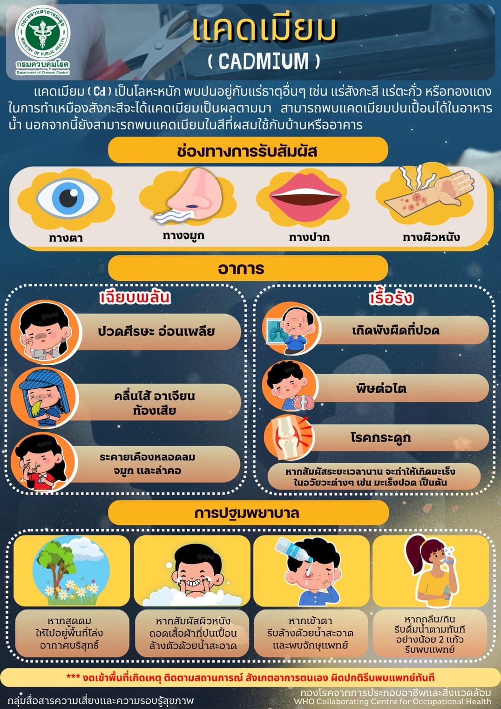
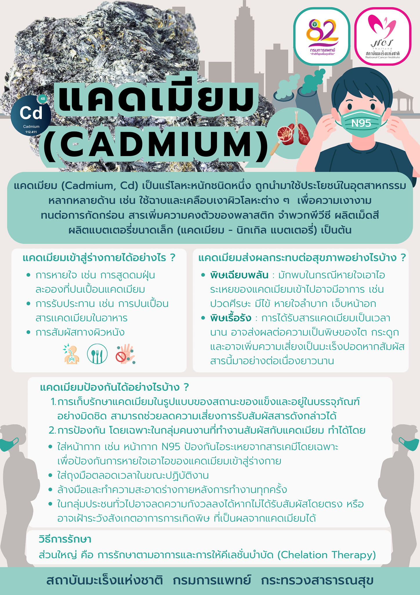

ไม่สามารถเข้าถึง location service ได้
ระยะทางระหว่างคุณกับโรงงานแคดเมียมที่เป็นข่าว
https://cadmium-bangkok.vercel.app/
ติดตามข่าว
ประกาศจาก กทม : ประกาศพื้นที่อันตรายโรงงานซุกแคดเมียมย่านบางซื่อ เร่งตรวจสุขภาพประชาชนบริเวณโดยรอบ
 